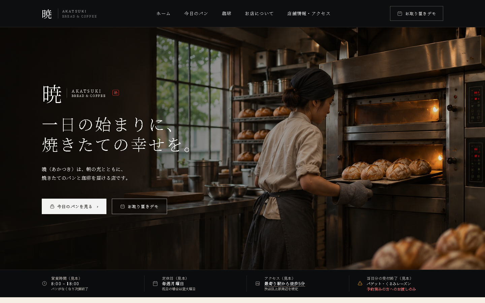
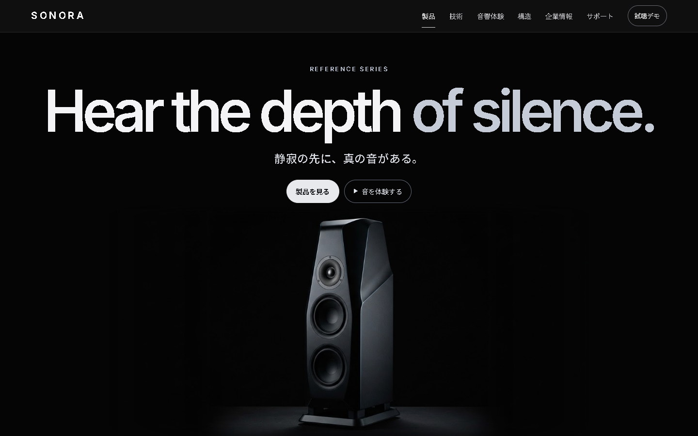

Webサイト
WebサイトUCHIMACHI HAIR
髪の変化やサロンの空気が伝わるよう、写真を中心に構成した美容室サイト。施術例からメニューまで、スマホでも迷わず読める流れを組みました。
架空の美容室／自主制作
Web atelier Tokushima, Japan
あなたのお店なら、こう作ります。
徳島の小さなお店のためのWebデザイン事務所「あわい」。
お店の空気や店主の思いが伝わるように、写真と言葉を整えます。
Portfolio
Webサイト髪の変化やサロンの空気が伝わるよう、写真を中心に構成した美容室サイト。施術例からメニューまで、スマホでも迷わず読める流れを組みました。
架空の美容室／自主制作

Webサイトパンが焼き上がる工房を入口に、商品やお店の情報を案内するベーカリーサイト。写真の色と文字の間隔を整え、焼きたての温かさが伝わる画面にしました。
架空のベーカリー／自主制作

Webサイトスピーカーを主役にしたオーディオブランドサイト。黒い背景に筐体の輪郭を見せ、製品、技術、音の体験へ自然に進めるように設計しました。
架空のオーディオブランド／自主制作
お店の状況を聞きながら、必要なものを一緒に整理します。写真や原稿がまだ揃っていない段階でもご相談ください。
どんなページが必要か、費用は何にかかるか。順を追ってお伝えします。
まずは営業時間や場所が伝わる、1ページのサイトから始めることもできます。
徳島県内では、実際のお店を見ながらの打ち合わせもご相談いただけます。
Flow 制作の流れ相談 → ご提案・お見積もり → 制作 → 公開
詳しいご依頼の流れを見る